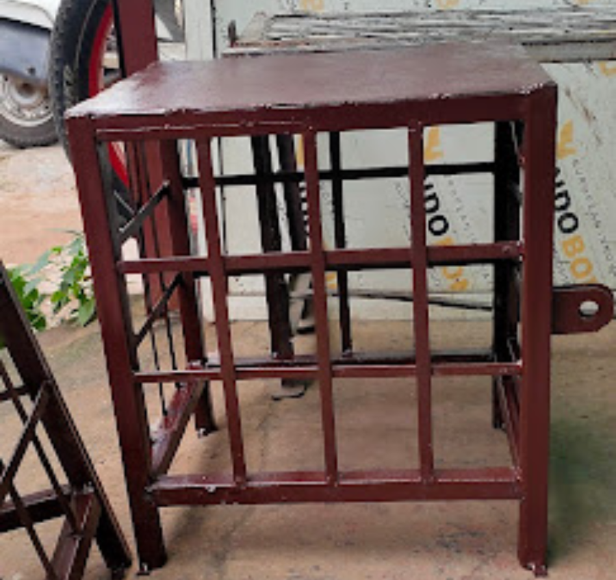

Domestic Water Motor Box / Stand
Secure steel & iron boxes and stands designed to protect domestic water motors from theft and damage — combining durability, safety, and long‑lasting use.

Benefits of Our Water Motor Boxes & Stands
- Durable iron & steel fabrication for long‑lasting strength
- Protects domestic water motors from theft and damage
- Rust‑resistant finishing for outdoor use
- Custom sizes available for different motor types
- Secure welding and lockable design
- Quick installation with premium finishing
Get a Free Quote
Fair pricing based on size, material and design. Call now for on‑site measurement.
📞 Call: 9810776115 💬 WhatsApp UsService Areas
Indirapuram (Shakti Khand, Niti Khand, Gyan Khand, Nyay Khand, Ahinsa Khand), Vaishali, Noida, Rail Vihar & nearby areas.
Frequently Asked Questions
How long does fabrication take?
Most water motor boxes and stands take 1–2 days depending on size and design.
Do you provide on‑site measurement?
Yes, we visit your location before fabrication to ensure perfect fitting.
Can I customize the design?
Yes, boxes and stands can be customized in size, lock type, material and finishing.
Do you offer installation?
Yes, installation is included with every order.